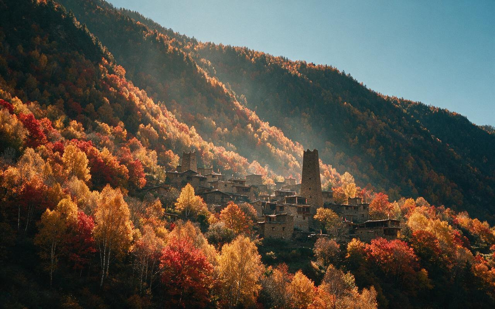
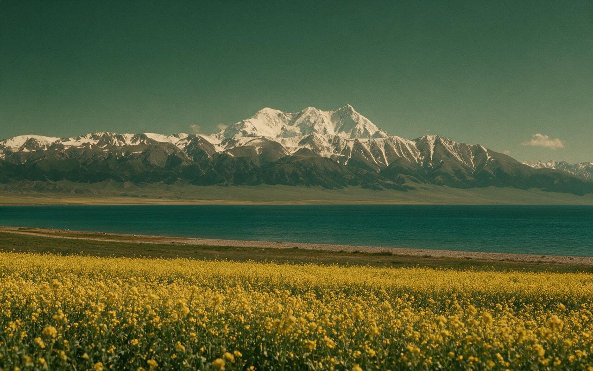
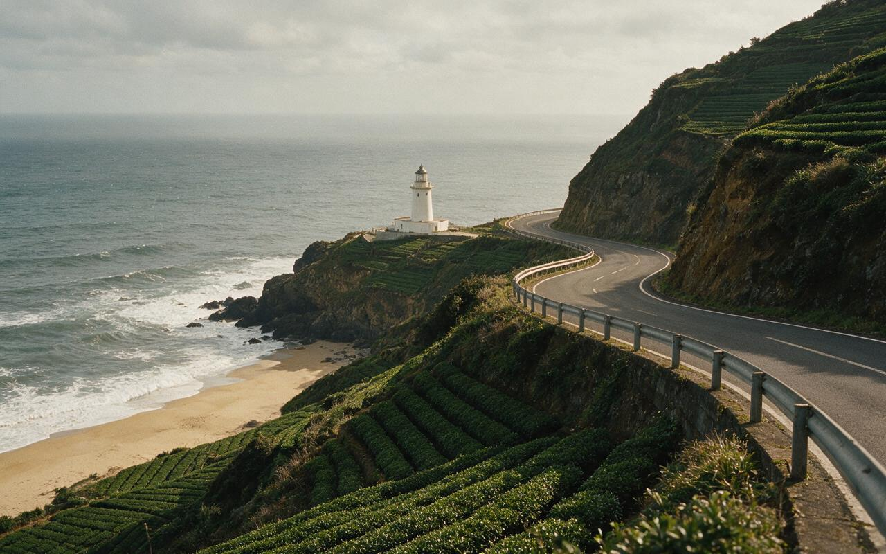
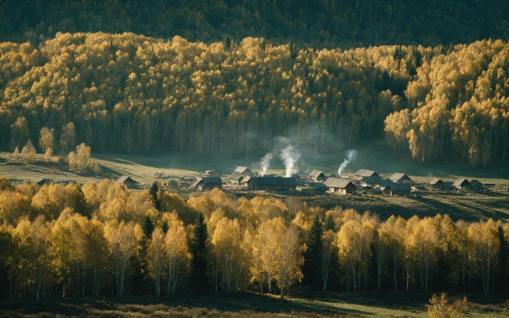
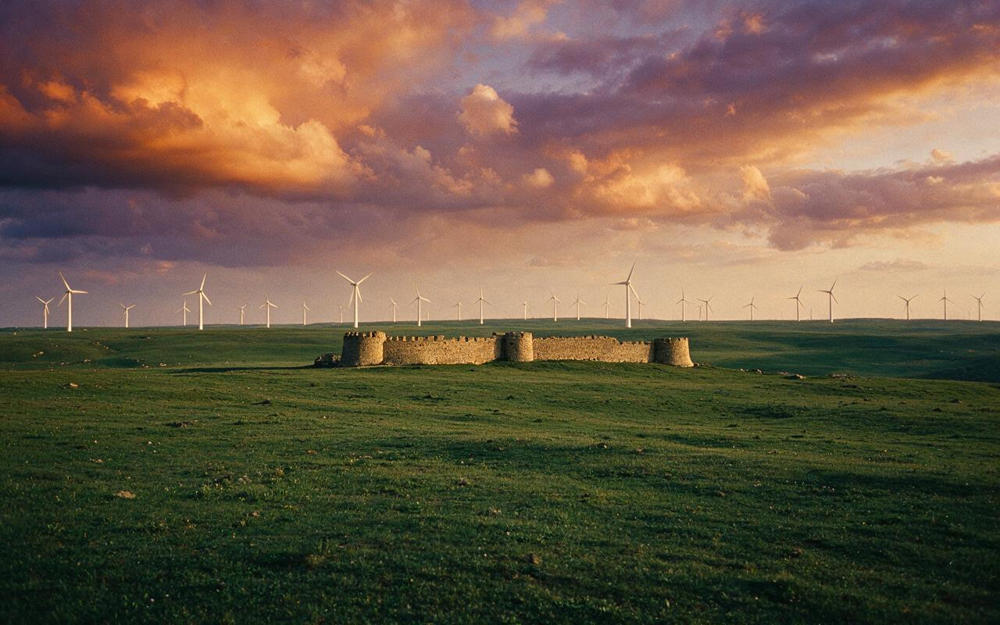

路线库
每条线路都经过至少 3 次实地踩线，形成 12 章标准手册。 手册包含逐日行程、补能地图、维修与救援点、住宿与餐饮白名单、摄影机位、 季节变体、风险与应急、成本与报价——发布前缺一章都不上线。
首发八线
我们不做线路数量。做得深、能复制、可交付，才是产品。

川西 · 大渡河谷 & 藏寨秋色
从成都到丹巴再到色达与嘉绒藏寨，把中国最美秋色与藏族聚落串起来的公路旅行。 核心体验：四姑娘山双桥沟秋色、大渡河谷连续发卡弯、丹巴嘉绒藏寨与碉楼、中路藏寨深度。
独库公路纵贯 ★ 旗舰
一年只开放约 120 天的纵向公路，一天穿越四季：哈希勒根达坂雪线、那拉提空中草原、 巴音布鲁克九曲落日、独山子大峡谷与安集海峡。最高海拔 3,390 m， 封路即停业并全额退改。
川滇 · 泸沽湖 & 稻城亚丁
摩梭母系文明的泸沽湖，与横断山脉里最震撼的高原湖泊群。 春季为高山杜鹃与油菜花，秋季为金黄杨林与彩林草甸。

河西 · 祁连山 & 青海湖大环线
从河西走廊进入祁连山脉，翻越多座 3,000 m 以上垭口抵达青海湖， 再沿湖岸西行至茶卡。油菜花期（7 月）与彩林期（9 月）是两个完全不同的产品。

东南 · 浙闽海岸线
沿海岸公路串起渔村、灯塔与山谷茶园。难度最低、最适合家庭与首次长途， 也是我们验证新领队与新供应链的首选线路。

新疆 · 喀纳斯 & 禾木
白桦林、图瓦人村落与冰川湖。9 月中下旬的秋色为全国最佳之一， 但也是住宿资源最紧张、路况变化最快的窗口——我们的手册在这一段会给出最详细的备选住宿。

塞北 · 草原天路 & 乌兰布统
坝上草原、风车与长城塞外的黄昏。夏季是绿，9 月下旬是金色的草与星空的旺季。 离主要城市近，是短假期的安全选择。
城市周边 · 周末微度假
每两周一班，周五 18:00 出发，周日 20:00 返回。周边 200–400 km 环线： 山野营地、梯田、湖边古镇、海岛公路。这是我们成本最低、频次最高的产品， 也是把新客户沉淀进私域的入口。
12 章线路标准手册
任何线路发布前必须完成并归档以下内容，缺一章不得上线。
行程与地图
① 线路概览 ② 逐日行程 ③ 路线地图（里程 / 限行 / 易堵）④ 补能地图
供给与后勤
⑤ 维修与救援点 ⑥ 住宿白名单（3 主 + 2 备）⑦ 餐饮方案（每餐 2 备）
影像与季节
⑧ 摄影机位手册 ⑨ 季节变体规则
风险与应急
每日的风险点、撤离路线、最近医院与应急物资清单
合同与告知
特别提示事项、自驾确认书条款、不可抗力
成本与报价
逐项成本表、报价表、单房差政策、退改规则
发团日历
固定发团节奏，降低你的决策成本。旺季不降价，只加价值。
| 月份 | 主力线路 | 季节窗口 | 运营重点 |
|---|---|---|---|
| 3–4 月 | L3 泸沽湖 & 稻城、L5 浙闽 | 春季花期 | 淡季试运营与新线首发 |
| 5 月 | L1 川西（预售）、L5、L8 | 五一亲子高峰 | 亲子线营销高峰，涨价不加量 |
| 6–8 月 | L2 独库、L4 青海湖、L6 喀纳斯、L7 草原 | 夏季全线 | 旺季峰值，高温与汛期预案 |
| 9–10 月 | L1 川西秋色、L6 喀纳斯秋色、L3 | 全年最旺季 | 提前 90 天锁定房源与车队 |
| 11 月 | L1 尾季、L5 浙闽 | 冬前收官 | 淡季启动、次年踩线 |
| 12–2 月 | L8 冬季版、温泉与冰雪线 | 冬季产品 | 淡季产品发布与年终复盘 |
季节窗口以实际开放状态为准。稻城亚丁等景区有特定日期的免票政策， 我们的手册会跟踪并写入门票成本；封路与管制则以官方通知为准并触发不可抗力退改。